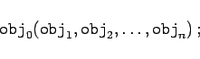
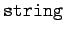
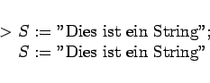
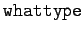
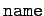
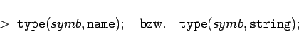
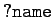
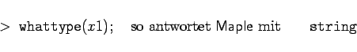
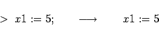
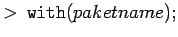

Im System Maple haben Eingaben oft die Form
|  | (20.31) |
Auch hier ist der erste Teil des Terms, d.h. der vor der öffnenden Klammer, in der Regel ein Operator, eine Anweisung oder eine Funktion, die auf die in der Klammer stehenden Teile wirken. In bestimmten Fällen sind als Argumente spezielle Optionen zulässig, die spezifische Anwendungen des Operators oder der Funktion steuern. Wichtig ist das abschließende Semikolon; es teilt Maple mit, daß die Eingabe beendet ist. Wird die Eingabe mit einem : beendet, so folgt daraus für Maple, daß die Eingabe zwar abzuarbeiten, das Ergebnis jedoch nicht darzustellen ist.
Symbole, d.h. Namen in Maple, können aus Buchstaben, Zahlen und dem Unterstrich ( ) bestehen. An erster Stelle darf keine Zahl stehen. Zwischen Groß- und Kleinbuchstaben wird immer unterschieden. Der Unterstrich wird von Maple für interne Symbole verwendet, er sollte deshalb in selbstdefinierten Symbolen vermieden werden.
) bestehen. An erster Stelle darf keine Zahl stehen. Zwischen Groß- und Kleinbuchstaben wird immer unterschieden. Der Unterstrich wird von Maple für interne Symbole verwendet, er sollte deshalb in selbstdefinierten Symbolen vermieden werden.
Zeichenketten, d.h. Objekte vom Typ , sind in Anführungszeichen '' gefaßt einzugeben:
|  | (20.32) |
Die Typprüfung mit  ergibt .
Solange einem Symbol kein Wert zugewiesen ist, ist das Symbol vom Typ bzw. , d.h., die Typprüfung
|  | (20.33) |
ergibt  .
.
Ist dem Nutzer nicht bekannt, ob ein Symbol in Maple schon mit einem Wert belegt ist, so läßt sich das mit der Eingabe  erfragen. Antwortet Maple mit dem Hinweis, daß es diesen Namen nicht kennt, so ist das Symbol frei verfügbar.
Nachdem dem Symbol ein Wert mit dem Zuweisungsoperator := zugewiesen wurde, nimmt das Symbol automatisch den Typ des zugewiesenen Wertes an.
| Beispiel |
|
Es sei x1 ein Symbol, das hier als Variable dienen soll. Gibt man ein 

|
Maple kennt je nach Version eine beträchtliche Anzahl von Anweisungen, Funktionen und Operatoren. Nicht alle sind beim Start des Systems sofort aufrufbar. Eine Vielzahl spezieller Funktionen und Operationen ist in Fachgebietspaketen in der Maple-Bibliothek vorhanden. Es gibt z.B. Pakete zur linearen Algebra, zur Statistik usw. Diese Pakete müssen bei Bedarf mit dem Befehl  zugeladen werden (s. Ergänzungen zur Syntax). Erst danach stehen ihre Operationen und Funktionen dem Nutzer in der üblichen Art zur Verfügung.